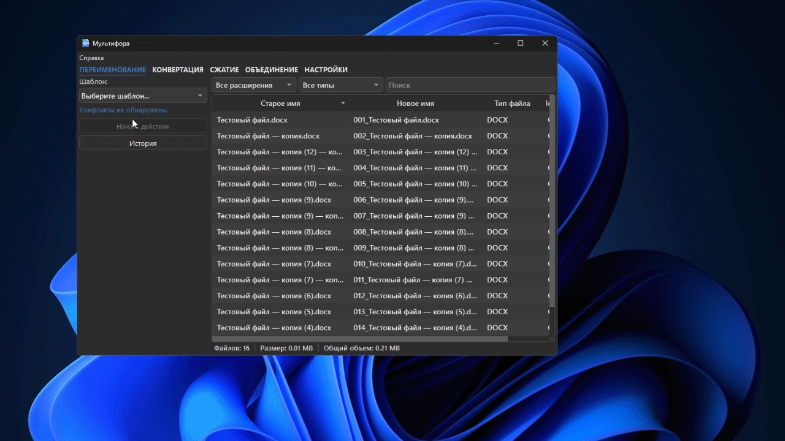

Пакетное переименование
Переименование меняет имена файлов по шаблону и перед запуском показывает результат в очереди. Используйте его для фотографий, документов, экспортов и других наборов файлов с едиными правилами именования.

Как переименовать файлы
- Добавьте файлы в очередь.
- Откройте вкладку ПЕРЕИМЕНОВАНИЕ.
- Выберите шаблон в поле «Шаблон».
- Заполните параметры, которые появились под шаблоном.
- Проверьте новые имена в очереди.
- Нажмите «Начать действие».
Шаблоны могут использовать имя файла, нумерацию, дату, размеры изображения, EXIF-данные, замену текста и регулярные выражения. Состав доступных полей зависит от выбранного шаблона.
В пользовательском шаблоне одно и то же поле можно вставить несколько раз. Например, {num:03d,start=1,step=1}_{name} {num:03d,start=1,step=1}_{name} для файла foto.jpg даст 001_foto 001_foto.jpg. Оба номера относятся к одному файлу; для следующего файла номер увеличивается на заданный шаг.
Что проверить до запуска
- У новых имён сохранены нужные расширения.
- Нумерация начинается с нужного номера и идёт в правильном порядке.
- В именах нет недопустимых для Windows символов:
\\ / : * ? " < > |. - Два файла не получают одно и то же имя.
- Новое имя не конфликтует с уже существующим файлом в папке.
Недопустимые имена блокируют запуск: исправьте шаблон или состав очереди. При совпадении целей и конфликтах с существующими файлами программа предупреждает об этом и подбирает свободный номер, сохраняя существующие файлы. Проверьте итоговые имена в предпросмотре и подтверждении.
Шаблоны и история
Пользовательские шаблоны можно экспортировать в JSON и импортировать на другом компьютере. Это удобно, когда один набор правил используют несколько рабочих мест.
Кнопка «История» показывает операции за текущую сессию. Выберите запись и нажмите «Откатить выбранное», чтобы вернуть прежние имена. Если исходные имена уже заняты или файлы недоступны, откат может оказаться невозможен. История не заменяет резервную копию файлов.
См. также: полное руководство и устранение проблем.